IT 배움에는 끝이 없다고, UI/UX 엔지니어링 강의 수료로 실무경험도 했습니다. 그저 회사 업무로만 생각하지 않고 배우며
저와 회사를 같이 성장시키는 그런 사원이 되겠습니다.
# Weaknesses
꼼꼼함이 약점이지만 저를 더 단단하게 만드는 과정이라고 생각합니다. 책임진 일을 꼼꼼하고 완벽하게 하려해 주위에서 걱정을 하곤 했습니다.
하지만 그 일을 마친 후 성취감으로 인해 더 전진할 수 있게 되었습니다.
# Opportunities
제가 좋은 사원이 되기 위한 기회라고 생각합니다. 때를 놓치지 않고 제 역량을 모두 발휘해,
넘어져도 털고 일어나서 달려가겠습니다.
# Threats
때론 어떤 위협이 와도 흔들리지 않고 외유내강인 모습으로
단단하게 그 자리를 지키겠습니다.
묵직하고 신뢰감 있는 그런 사원이 되겠습니다.
Career
티밥 미디어
현장실습을 계기로 인연이 되어 다시 불러주셔서 취직하게되었습니다.
하게 된 업무는 바이럴마케팅으로 SNS관리, 블로그 마케팅을 했습니다.
그 외 상세페이지 포토샵, 일러스트 작업과 거래처 관리를 했습니다.
유세스파트너스 - LG 자회사
웹퍼블리셔로 들어가 계약한 회사의 홈페이지를 만들어주는 업무를 했습니다.
그 외로 계약서 담당, 거래처 PM, 마감, 경리 등 여러가지 업무를 담당했습니다.
정직원으로 채용될 예정이었지만 부서가 없어지면서 권고사직으로 퇴사를 하였습니다.
투맥 인디고
같이 일했던 이사님 소개로 면접을 보고 홈페이지 관리자로 들어가게 되었습니다.
온라인 사업이 처음인 회사라 처음부터 끝까지 작업하였고, 블로그, 인스타 등
SNS 바이럴마케팅 업무, 네이버 키워드 광고, 지하철 광고 등 여러가지 광고 업무를 맡아서 했고 인디고 경리 업무 등 다양한 업무를 경험했습니다.
PC에서는 화면을 내렸을 때 header가 고정이 되며 css가 바뀌는 효과를 주었습니다. 이미지는 백그라운드로 넣었으며, li크기에서 텍스트 높이를 jQuery에서 동적으로 계산해 딱 맞게 만들었습니다. 모바일 화면에서는 css를 수정해 최적화를 시켰습니다.
02
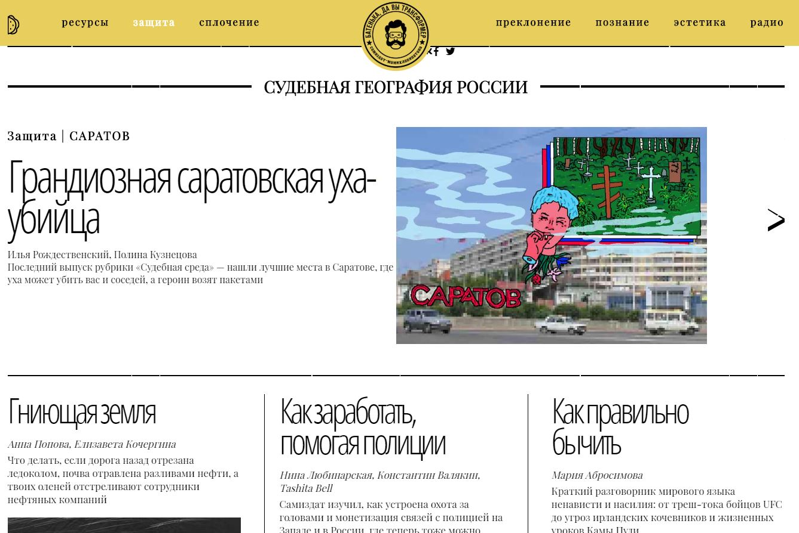
PC 화면
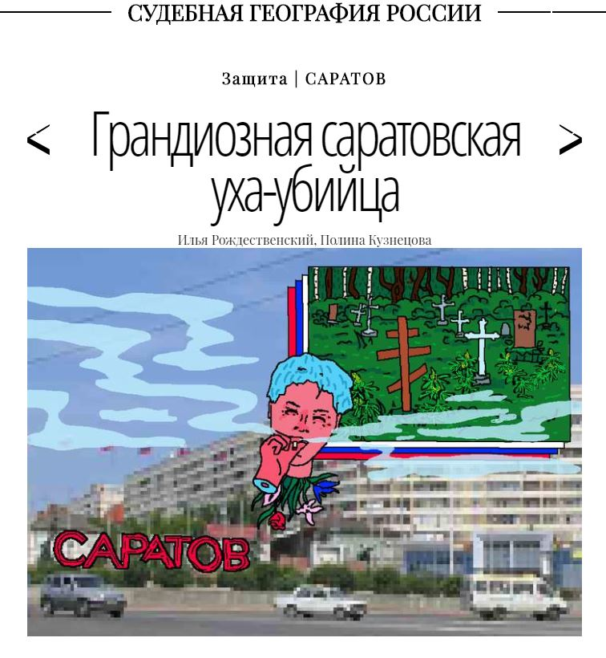
모바일 화면
PC화면과 모바일에서의 슬라이드를 다르게 구현해보았습니다.
화면이 resize가 되며 화면이 작아졌을 시 이전버튼도 생기게 했습니다.
팝업창을 사용해 contact 정보를 기재해 놓았습니다. 이 외에도 서브페이지를 다 작업하였으며 각 서브페이지의 컨셉에 맞게 작업을 하였습니다. 반응형을 우선순위로 두고 작업한 홈페이지이고 서브페이지들이 공통된 부분이 많아, 처음 레이아웃작업과 jQuery작업이 필요한 페이지였습니다.
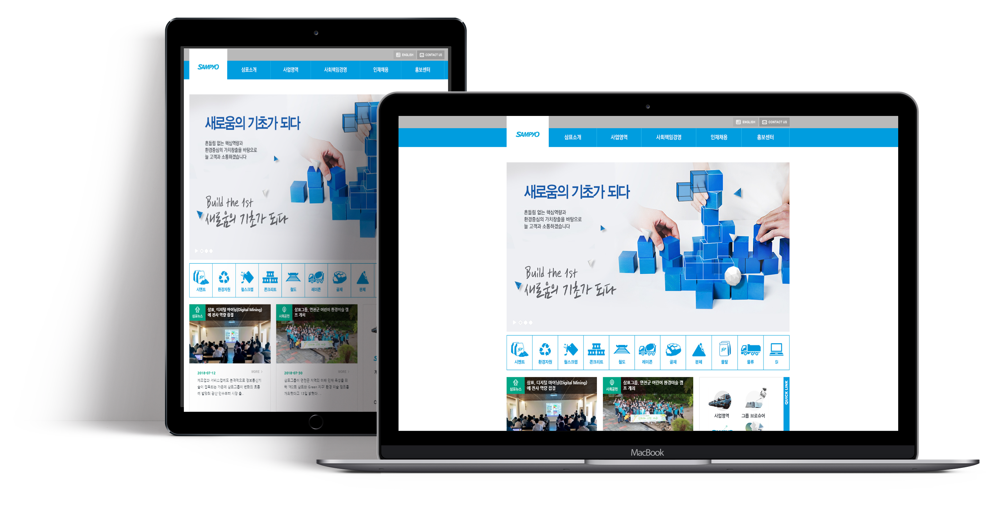
레이아웃 구조를 잡는 연습을 하기 좋았고 Markup, css, jquery를 다양하게 사용할 수 있는 페이지들이 많고 슬라이드 배너와 페이드 배너를 연습하기가 좋아서 서브페이지까지 다 만들어보게 되었습니다.
PC화면과 모바일 화면의 레이아웃을 다르게 만들었습니다. 햄버거 메뉴를 사용해 다른 서브페이지로도 이동이 쉽게 만들었습니다.
02
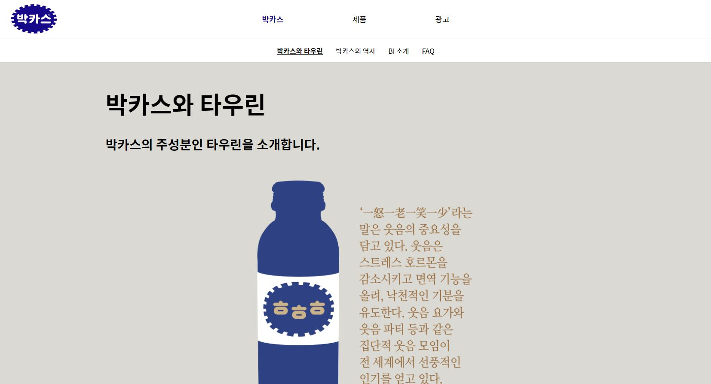
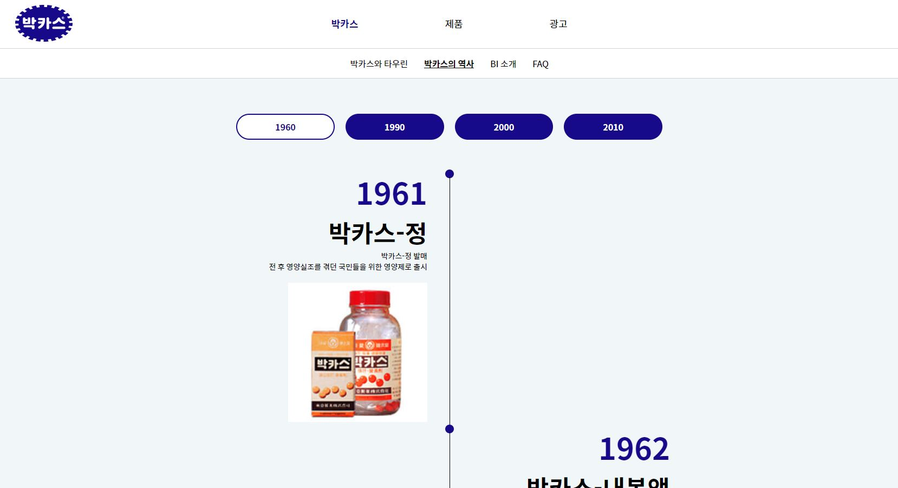
PC 화면
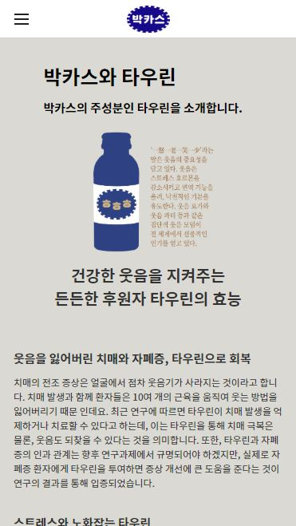
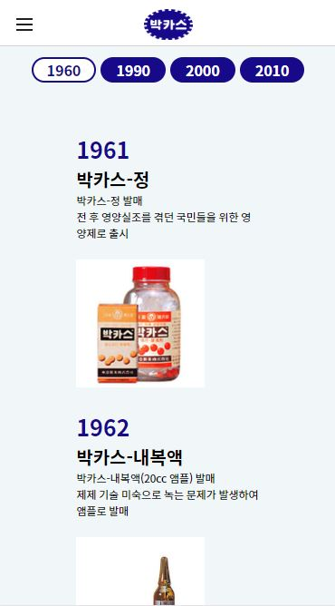
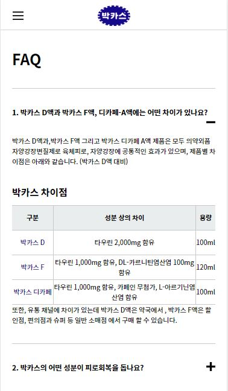
모바일 화면
서브페이지에서도 PC, 모바일의 구조를 다르게 잡아 보기 쉽게 만들었습니다. 서브페이지들은 스크롤 함수를 사용해 해당 영역에 오면 애니메이션 효과를 주도록 만들었고 FAQ같은 경우엔 클릭하면 내용이 보이게 했습니다.
03
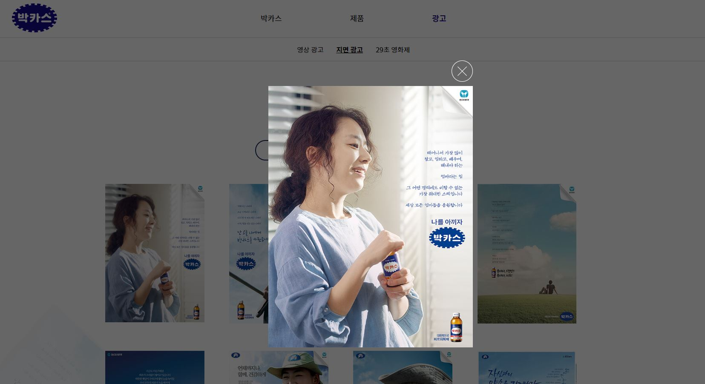
PC 화면
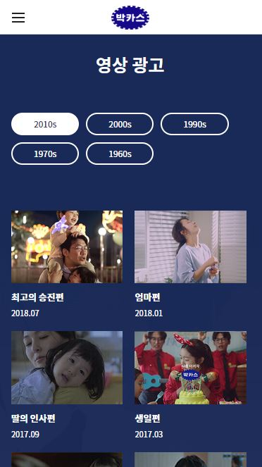
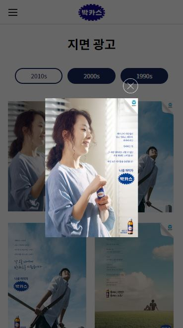
모바일 화면
광고 서브페이지 같은 경우에는 탭형식으로 만들어 년도별로 나열했습니다. 또한 lightbox를 사용해 해당 이미지를 크게 볼 수 있도록 만들었습니다. 마우스 휠과 스크롤 함수를 사용해 재미난 효과를 줄 수 있었고 PC와 모바일의 레이아웃 구조를 다르게 할 수 있어서 재밌게 작업했던 홈페이지입니다.
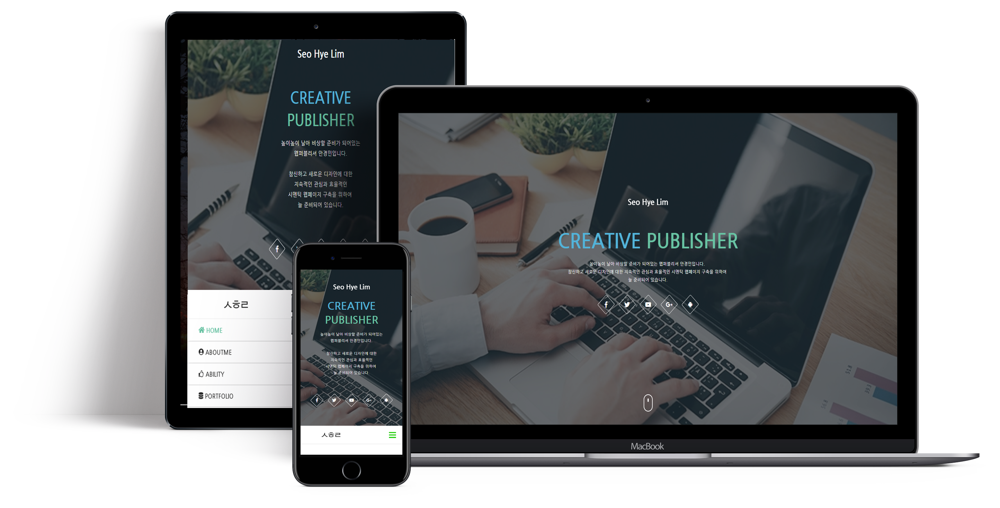
줄였을 때 반응형으로 반응할 수 있도록 연습한 페이지입니다. 스크롤 함수도 다양하게 사용하였고, 슬라이드배너도 반응형으로 작업해보았습니다.